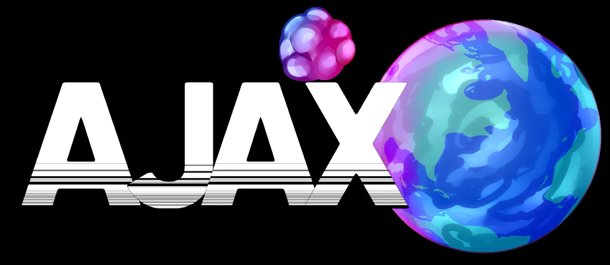
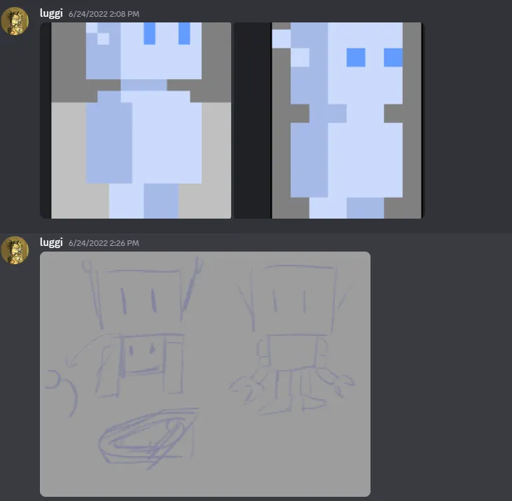
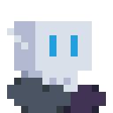
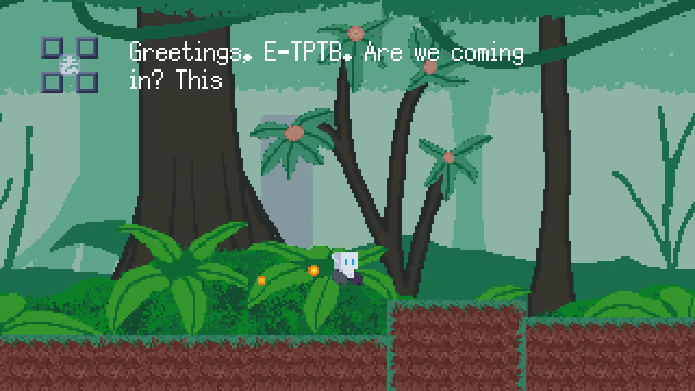
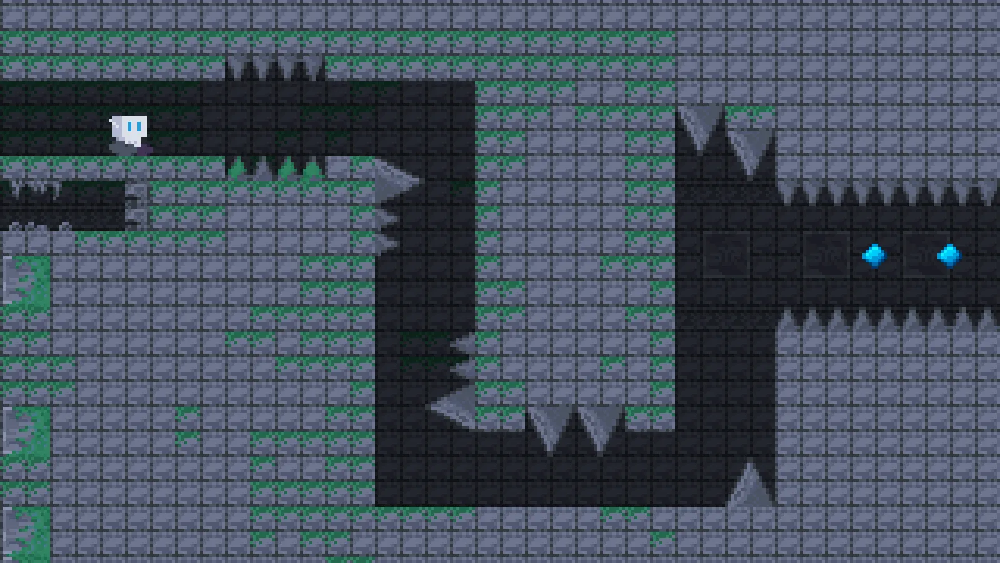
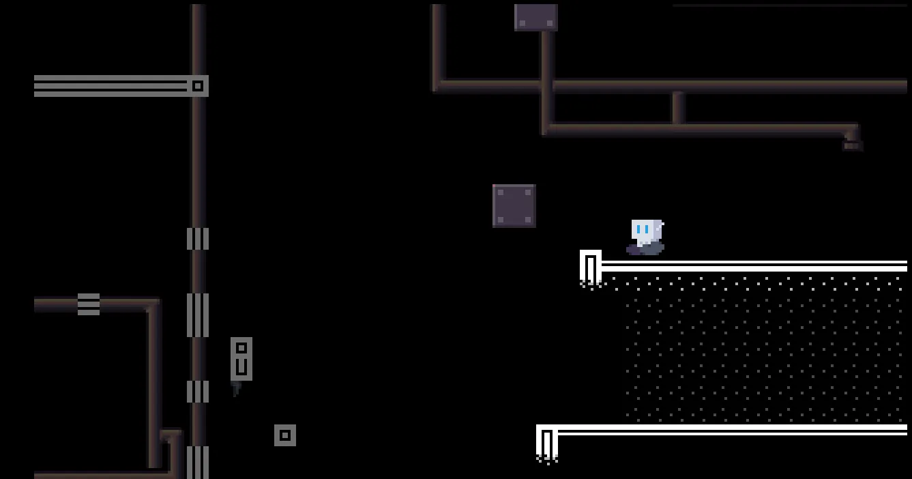

AJAX
ROLES
Character Designer, Environment Artist, Animator
Takeaways
- Designing for constraints (time, scope, team size) leads to more focused and feasible solutions, such as simplifying character design and asset complexity.
- Rapid prototyping and clear role delegation are essential for effective team collaboration under tight deadlines.
- Environmental storytelling can effectively communicate narrative and theme without interrupting gameplay.
Project Overview
AJAX is a short 2D side-scroller created for the A2B2 Game Jam (2022) under the theme of “Corruption.” The game follows E-TBTP, a robot investigating the source of corruption spreading across a planet.
You can play the game on itch.io here: AJAX
I worked on the project alongside pokevii, Altiami, and an anonymous composer, contributing as part of a small interdisciplinary team.
Context
Genre: Action, Platformer
Team Size: 4
Platform: PC
Development Time: June 24th - June 26th 2022 (Two Days)
Tools Used: Aseprite (Artwork), Unity (Level Design)

Objective
With the theme of "Corruption" in mind along with the lore document provided, we quickly ended up at the idea of a robot investigating a planet that's been giving off strange energies. With only 48 hours to make the game, we quickly asigned roles to quickly ideate and prototype, the art, the gameplay, and the music. I was in charge of the designing and animating the player character: E-TBTP, a robot, as well creating the assets for different environments: the forest and the ruins. With the time-constraint, it was vital I quickly iterated on the art for the game.
For the robot, E-TBTP, I quickly went through different iteractions of the design, originally going for a more humanoid design, before I simplified the character's silouhette through giving the character track wheels as its only limbs along with its boxy body and head. This kind of design for a two-shape character would lead to a character that was unique, easily identifiable as robotic, and would be one that would be easier to animate given the time constraint.


Development
Once the animations on E-TBTP were completed, I moved onto creating art assets for two environments, the forest and the ruins. This included the tilesets and the background, with a focus on maintaining strong visual readability and ensuring the player character remained visually distinct within each environment.
To achieve this, I intentionally designed the environments around color contrast and palette separation. E-TBTP uses a bluish color scheme, so I selected either darker tones for the ruins or complementary green hues for the forest. This approach supports visual hierarchy by ensuring the player character remains easy to spot on screen, improving moment-to-moment clarity during gameplay, especially during tough to navigate sections.
For the forest, I split it into different assets to allow pokevii to create a parallax effect with the background in Unity, this effect would give the player a sense of the world being far bigger than the confines of the screen. This, along with the lighter colour-palette gave the player a lot of freedom to get used to the controls of the game as well as contrasting heavily against the ruins, which was far more confined and tense.


Level Design
Near the end of development, I was asked to quickly assemble the final bit of the level design by pokevii as time was beginning to run out as he needed to finish the programming. The section I helped assemble was to represent the corruption of the world, with bits of the environment from the ruins and the forest scattering the area before columinating with the player ending up in a graveyard full of robots sent before it, communicating the fact that the organization behind the robot is also corrupt as they don't even care for the player.
Upon revisiting the game, I realized a certain section of this level lacked clear guidance for the player, as the block the player was meant to hop on was camoflauged with the background on top of being cut off by the top of the screen. Something like this immediately pulled me out of immersion as I wasn't sure where I was supposed to go for a moment, and it shows how something obvious to me in the past as the designer could be something that isn't obvious to a player, and how important it is to have clear visual communication in a game, especially in a platformer where the player needs to be able to quickly read the environment to react to it.

Conclusion
Overall, despite the crunch from the 48-hour deadline, AJAX was a wonderful experience for me as it was the first time I had worked on a game with a team. As I was already close with the team members I mainly learned about working with a team in a game jam and how it required clear communication, parallel production, as well as to be prepared for any unexpected tasks to be assigned to you.